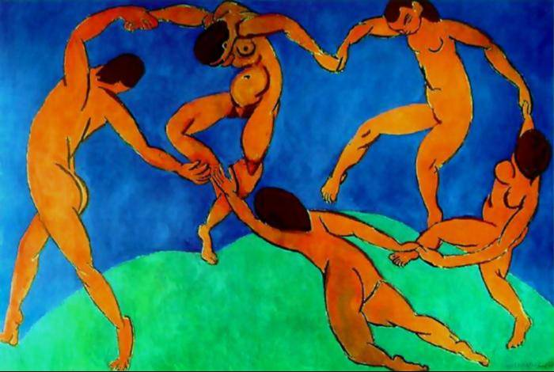
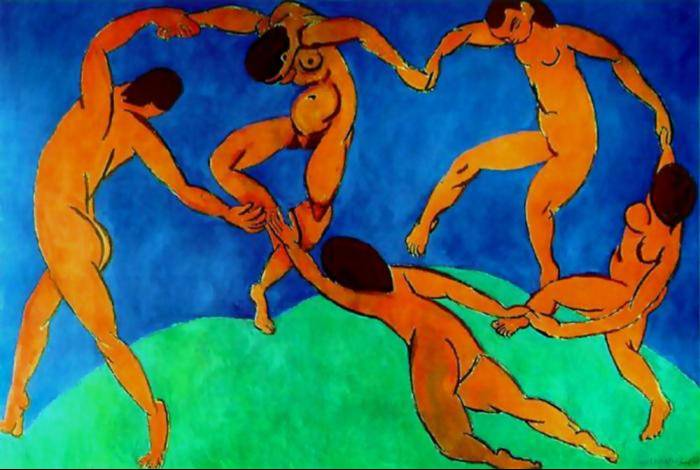

Pieter Brueghel ou Bruegel dit l'Ancien est un peintre braban�on n� � Bruegel (pr�s de Br�da) vers 1525 et mort le 9 septembre 1569 � Bruxelles. Avec Jan Van Eyck, J�r�me Bosch et Pierre Paul Rubens, il est consid�r� comme une des quatre grandes figures de la peinture flamande.
Tableaux de Brueghel l'Ancien
L'impressionnisme est un mouvement pictural fran�ais n� de l'association de quelques artistes de la seconde moiti� du XIXe si�cle. Fortement critiqu� � ses d�buts, ce mouvement se manifesta notamment de 1874 � 1886 par huit expositions publiques � Paris, et marqua la rupture de l'art moderne avec l'acad�misme. L'impressionnisme est notamment caract�ris� par une tendance � noter les impressions fugitives, la mobilit� des ph�nom�nes climatiques, plut�t que l'aspect stable et conceptuel des choses, et � les reporter directement sur la toile. L'impressionnisme eut une grande influence sur l'art de cette �poque, la peinture bien s�r, mais aussi la litt�rature et la musique.
Tableaux de Claude Monet


Le fauvisme est un courant de peinture du d�but du XXe si�cle. Tir� d'une expression du journaliste Louis Vauxcelles, il d�buta historiquement � l'automne 1905, lors du Salon d'automne qui cr�a scandale, pour s'achever moins de dix ans plus tard, au d�but des ann�es 1910. En fait, d�s 1908, il est d�j� � son cr�puscule. Son influence marqua n�anmoins tout l'art du XXe si�cle, notamment par la lib�ration de la couleur. Le pr�curseur du fauvisme �tait Henri Matisse, mais d'autres artistes, comme Andr� Derain, Maurice de Vlaminck ou encore Georges Braque en ont fait partie.
Tableaux de Matisse 
